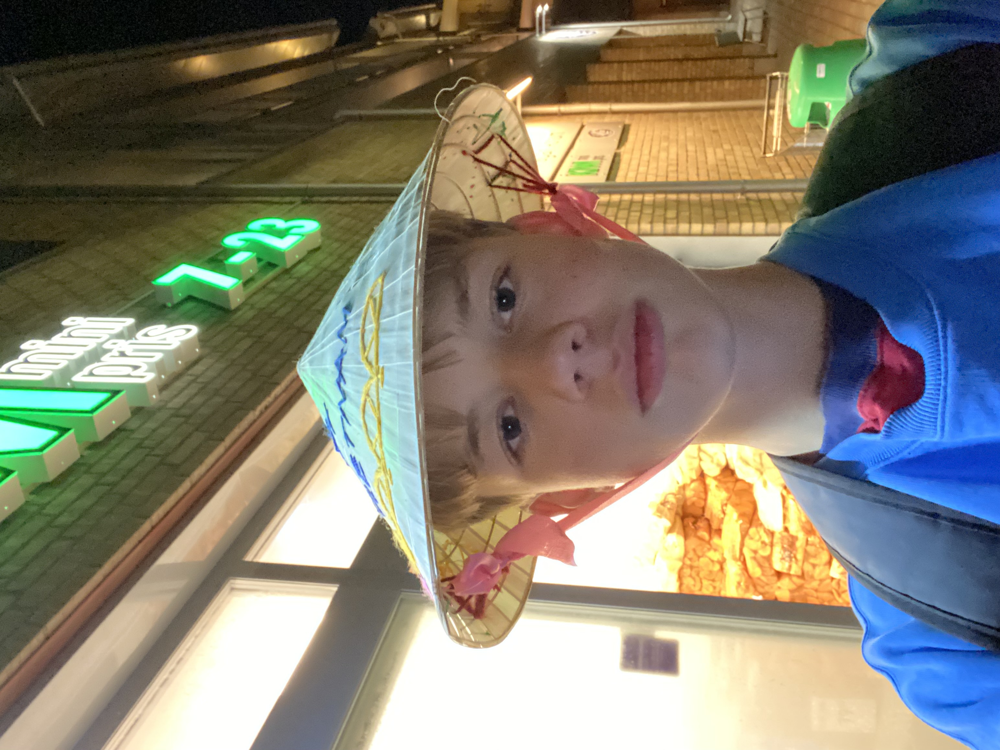
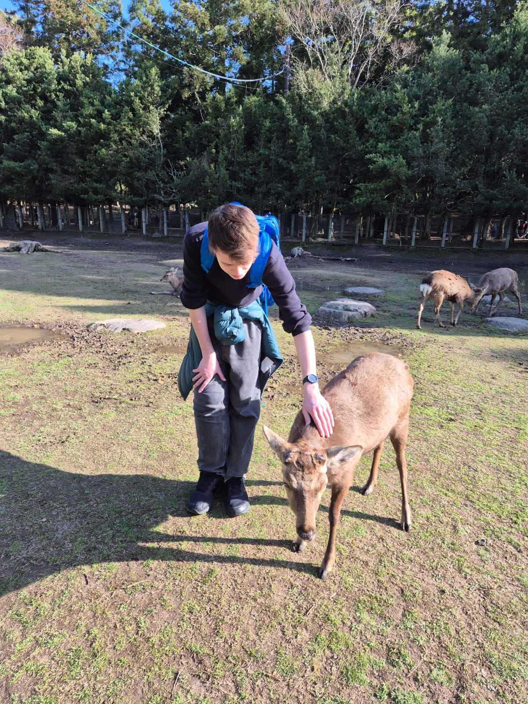
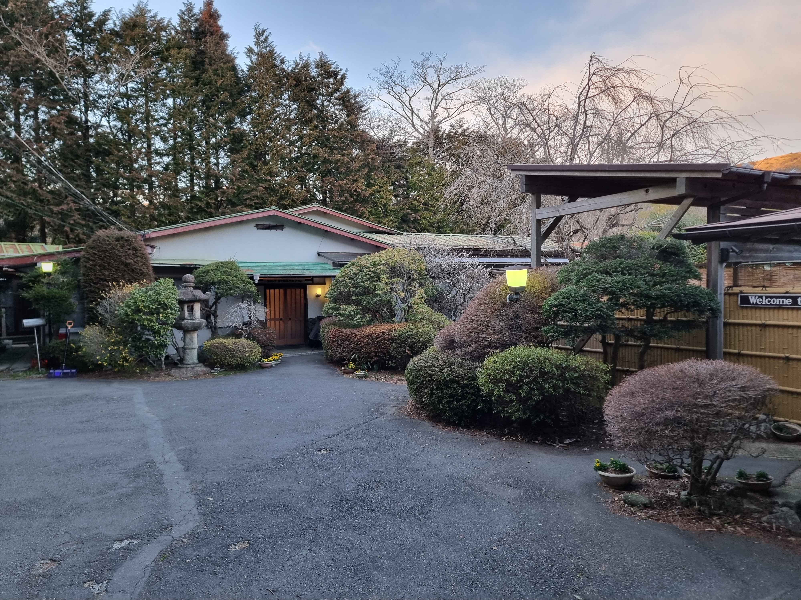
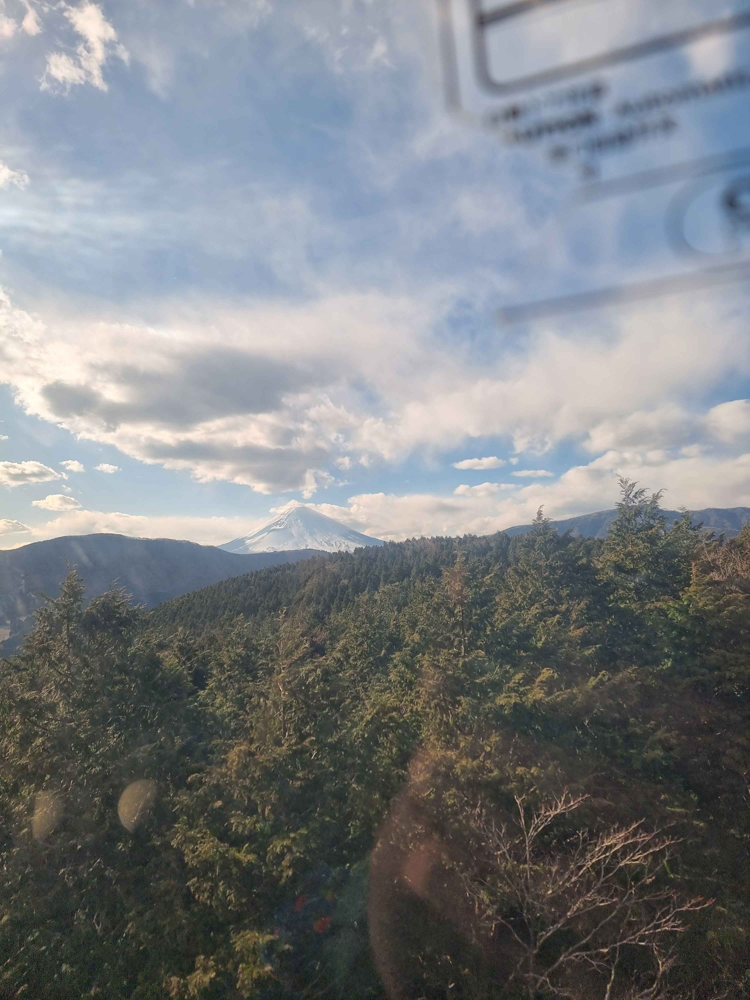
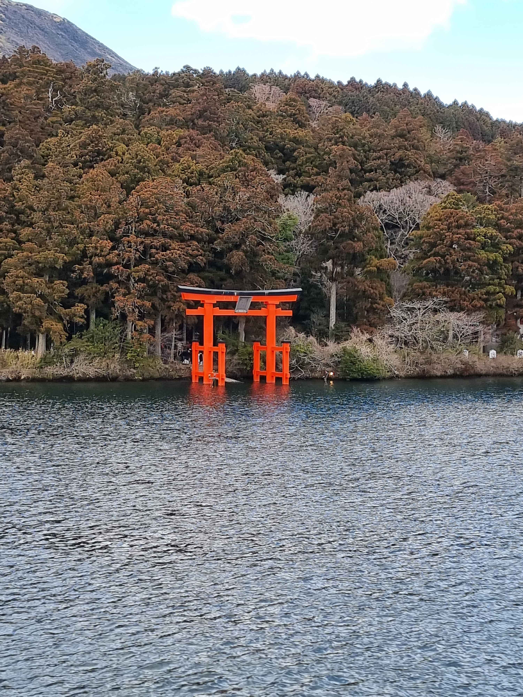

Lukas' high school subjects and experience. During highschool i didnt have much of an option to work with programming,
so i chose physics and maths as my main subjects. I really liked them.
I wasnt really exposed to any coding other than a small amount of python
Marius' high school subjects and experiences. I luckily had the option to have IT as one of my subjects during high school,
and thus I ended up doing IT1 and IT2, in addition to maths and french. I really enjoyed the IT subjects,
which is why I decided to continue studying it further here at NTNU.
Lukas' coding skills does not involve a lot from before. As i said we didnt have any of it in highschool and my friends didnt work alot on it. However now in study start i feel comfortable in making a "noob " website
Marius' coding skills are very basic, and mostly surround python (and pygame), html and css (with some minimal exposure to javascript and flask). Although I've been doing IT for 2 years in highschool,
I can still tell that there is so much to learn, and I definitely don't know enough about programming to call myself and expert.
Lukas' Hobbies. In my freetime, that is when i had free time i do alot of different things.
I love to be with my friends both online playing video games, and offline doing different activities.
Recently we have picked up on the sport frisbee golf or discgolf and we played it all summer.
Marius' Hobbies. Up until now I've mostly spent my freetime hanging out with friends, playing differnet video games,
and trying out some different activities here and there. However, with the new environment and moving to Trondheim,
I'm hoping to find some new activites, clubs or "verv" to participate in.
| Michael jordan |
Lionel Messi |
 |
.jpeg) |
Michael Jordan is my favourite basketballplayer of all time. I love to see clips of him playing
and the mentality he brought to the basketball court
Lionel Messi is my favourite soccer player. I loved to watch him carry Argentina in the world cup
I have always wanted to go to japan. I love close to every aspect of the culture and tokyo is on my bucket list.
During summer break this year i was in barcelona with my friends. This was the celebration of our graduation.
| Tiger Woods |
Kylian Mbappe |
 |
|
Tiger Woods is one of my favorite athletes of all time. Growing up I watched a lot of golf with my dad,
and it would always be him at the top, plaiyng in a league by himself.
Kylian Mbappe is also one of my favorite athletes, mostly because he tends to play super well
whenever I am watching France participating in some football cup.
| Hakone, Japan |
|  |
 |
 |
During my gap year, I travelled a bit througout Asia, and one of my favorite memories and places was Hakone in Japan.
When visiting it, I was in awe of how beautiful the nature was, and how traditional it felt compared to the bigger cities like Tokyo and Osaka.
At the same time, it did not dissapoint in having things to do tourism wise, and it's somewhere I'd love to revisit one day, and can recommend to others wanting to visit Japan.